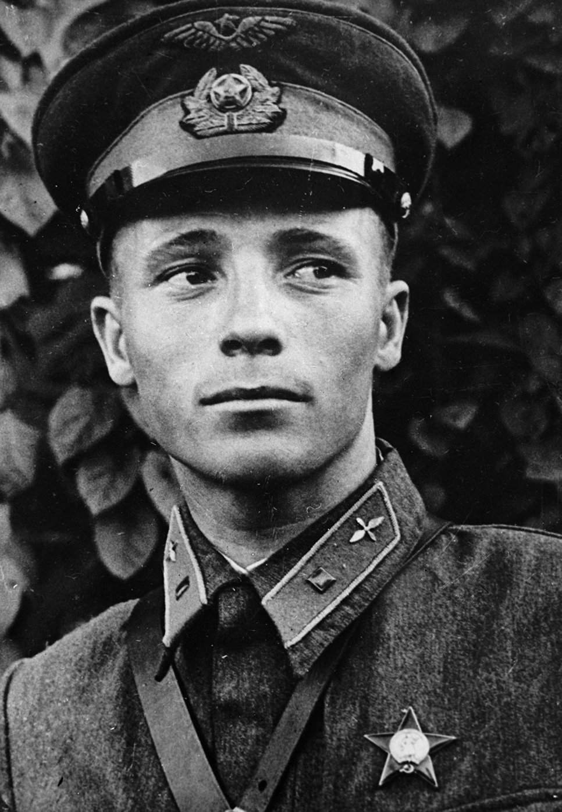
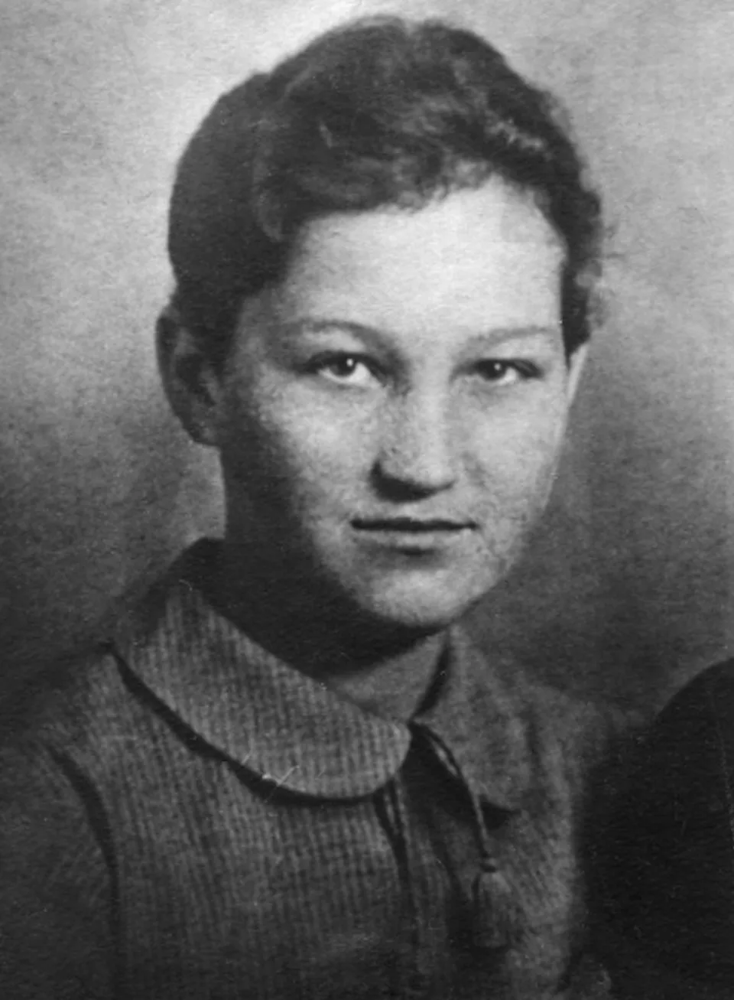

Герои Московской битвы
Нажимайте на фильтры по ролям и открывайте личные дела защитников столицы
 Полководец • Западный фронт
Полководец • Западный фронт
Георгий Константинович Жуков
1896 – 1974 • Генерал армии, Маршал Победы
Возглавил оборону Москвы в октябре 1941 года и организовал декабрьское контрнаступление.
 Полководец • 16-я армия
Полководец • 16-я армия
Константин Константинович Рокоссовский
1896 – 1968 • Генерал-лейтенант
Командовал 16-й армией на главном направлении удара немецких танков — вдоль Волоколамского шоссе и у Истры.
 Комдив • 316-я стрелковая дивизия
Комдив • 316-я стрелковая дивизия
Иван Васильевич Панфилов
1893 – 1941 • Генерал-майор
Создатель легендарной Панфиловской дивизии, разработавший тактику эшелонированной противотанковой обороны.
 Герой передовой • Разъезд Дубосеково
Герой передовой • Разъезд Дубосеково
Василий Георгиевич Клочков
1911 – 1941 • Политрук роты
Возглавил группу истребителей танков в легендарном бою у разъезда Дубосеково 16 ноября 1941 года.

Авиация ПВО • Ночной таранВиктор Васильевич Талалихин
1918 – 1941 • Младший лейтенант
Одним из первых в мире совершил ночной воздушный таран в небе над Подмосковьем, защищая столицу.

Разведка и партизаны • ПетрищевоЗоя Анатольевна Космодемьянская
1923 – 1941 • Боец диверсионной части
18-летняя московская школьница, ушедшая добровольцем в тыл врага и ставшая символом несгибаемой стойкости.